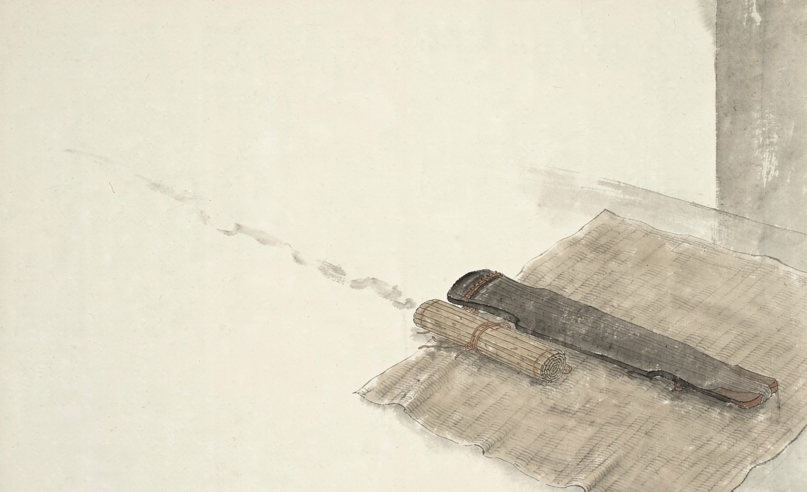
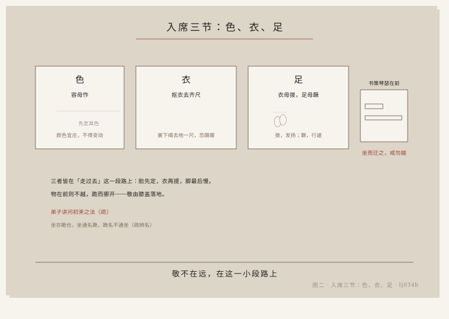

曲礼上 · 一·三十五＋一·三十六 · 第 34 课
这一节讲弟子初入席的分寸：将要就席，脸色不可变动；两手提起衣裳，使下摆离地一尺；衣裳不可飞扬；脚步不可急遽。接着一句：师长的书简琴瑟在跟前，要跪着挪开，不可跨过去。
说什么事：将即席，容毋怍；两手抠衣，去齐尺；衣毋拨；足毋蹶。先生书策琴瑟在前，坐而迁之，戒勿越。
落在哪一层：教。上节讲客席之间隔，这节讲自己如何走过去坐下。
为何编在此位：一·三十四是「席怎么布」，此节是「人怎么入席」；布与入相接。
【经】將即席，容毋怍。兩手摳衣，去齊尺。衣毋撥。足毋蹶。先生書策琴瑟在前，坐而遷之，戒勿越。
怍 郑注：「怍，颜色变也。」疏：「初将来就席，颜色宜庄，不得变动颜色。」
抠衣、去齐尺 郑注：「齐谓裳下缉也。」疏：「以两手当裳前提挈裳使起，令裳下缉去地一尺，恐衣长转足蹑履之。」
拨 郑注：「拨，发扬貌。」——裳摆扬起。
蹶 郑注：「蹶，行遽貌。」疏：「勿得以为行遽，恐有蹶踬之貌。」
坐而迁之 郑注：「广敬也。在前，谓当行之前。」疏：「坐亦跪也，坐通名跪，跪名不通坐也。」
戒勿越 疏：「越，逾也。弟子将行，若遇师诸物或当己前，则跪而迁移之，戒慎勿得逾越。」
将要就席，脸色不可变动；两手提起衣裳，使下摆离地一尺；衣裳不可扬起；脚步不可急遽。师长的书简、琴瑟在跟前，就跪着把它挪开，切勿跨过。
一节讲的是「走过去」的三个不许：色不许变、衣不许扬、足不许急；再一句讲「过不去时怎么办」：不跨，跪着挪。敬，在这一小段路程上全部显形。
第一层 「容毋怍」：先把脸定住 就席是一段被看见的路程：众人都坐着，你一人走来。郑注只说「颜色变」，疏说得实：「初将来就席，颜色宜庄。」——紧张、慌忙、得意，都写在脸上；礼先管脸。
第二层 「抠衣去齐尺」：为的是不踩到自己的衣裳 疏把理由说得极具体：「恐衣长转足蹑履之。」提裳一尺，是不让下摆绊脚。礼在这里不是姿态，是防跌；敬的外形，往往就是「不出错」的外形。
第三层 「衣毋拨，足毋蹶」：不许带风 衣扬是急，足遽是慌。两样都是「赶」的样子；就席而带风，是把全堂的目光都拽过来。
第四层 「坐而迁之，戒勿越」：物在人前，人不越物 郑注四字「广敬也」。师长的书、琴瑟放在道上，弟子不跨，跪下挪开。疏又辨一字：「坐亦跪也，坐通名跪，跪名不通坐」——此处之「坐」实是跪。物的尊严，由人的膝盖来表达。
与今日何干 今日入座，多是边走边说话、跨过别人的包与书。此节给的次序很旧也很灵：先把脸定住，再把衣裳提起，脚步不快；前头有别人的东西，不跨，挪开。
| 左 | 右 |
|---|---|
| 将即席，容毋怍 | 颜色宜庄，不得变动 |
| 两手抠衣，去齐尺 | 恐衣长转足蹑履 |
| 衣毋拨，足毋蹶 | 拨，发扬貌；蹶，行遽貌 |
| 书策琴瑟在前，坐而迁之 | 广敬也；坐亦跪也 |
| 戒勿越 | 越，逾也；不跨而过 |

